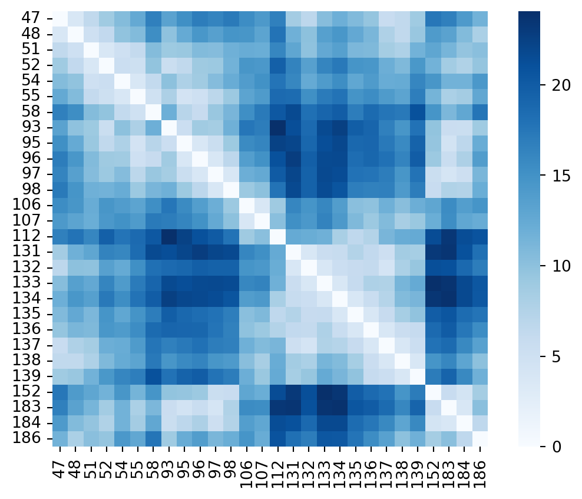
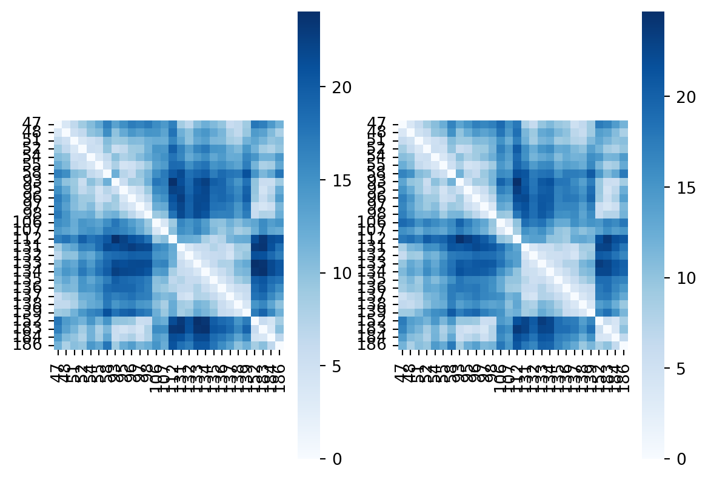
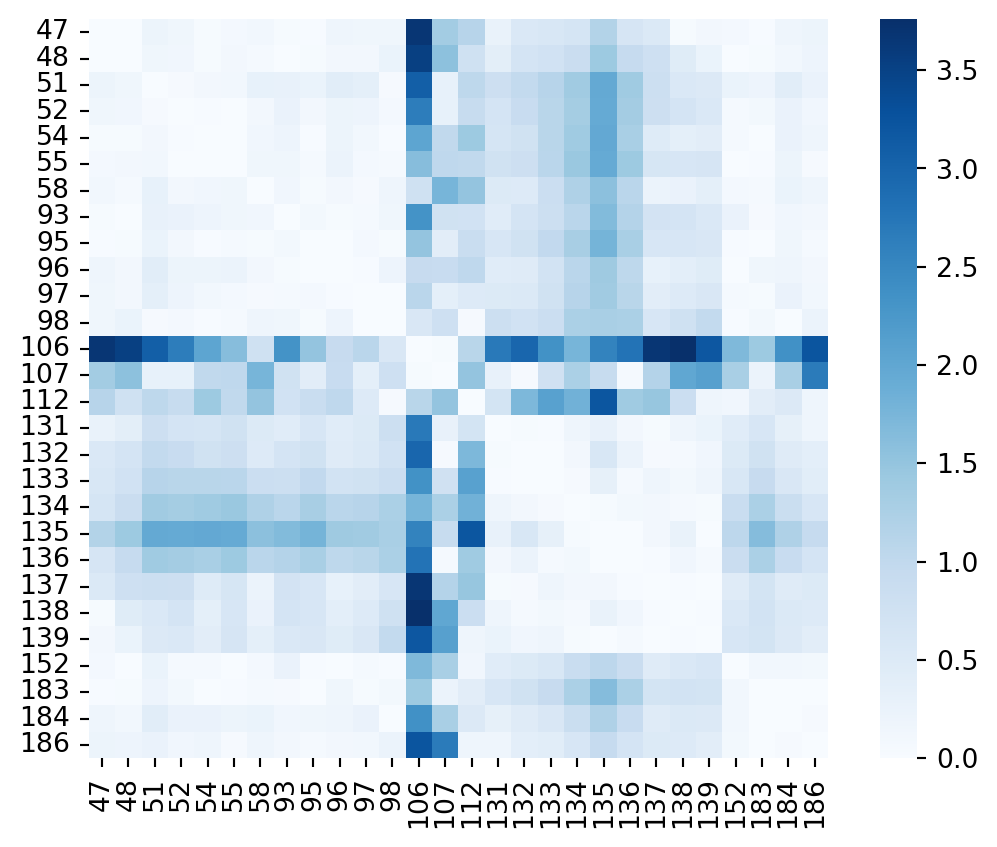
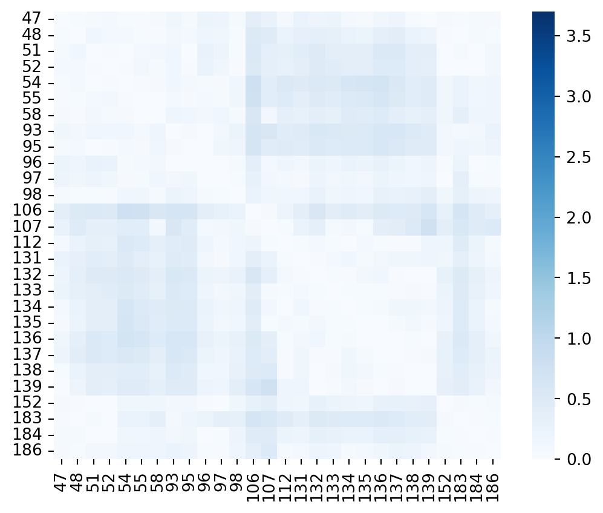
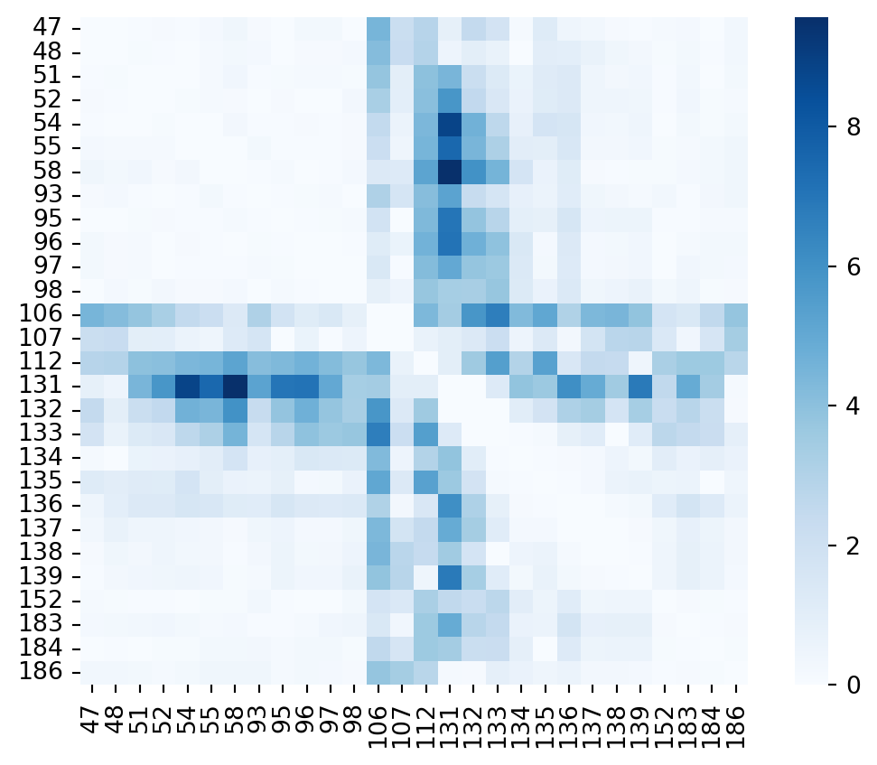
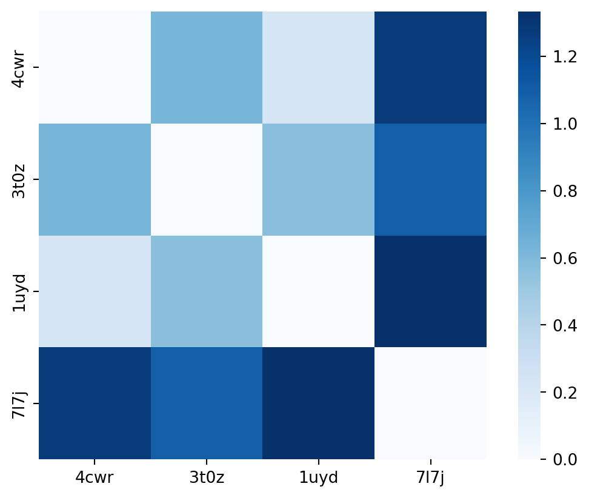
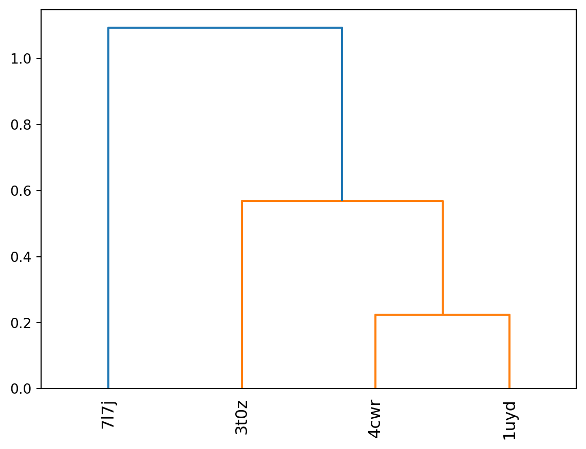
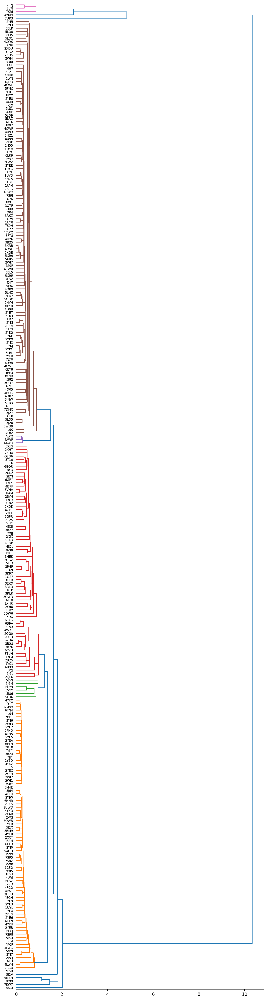
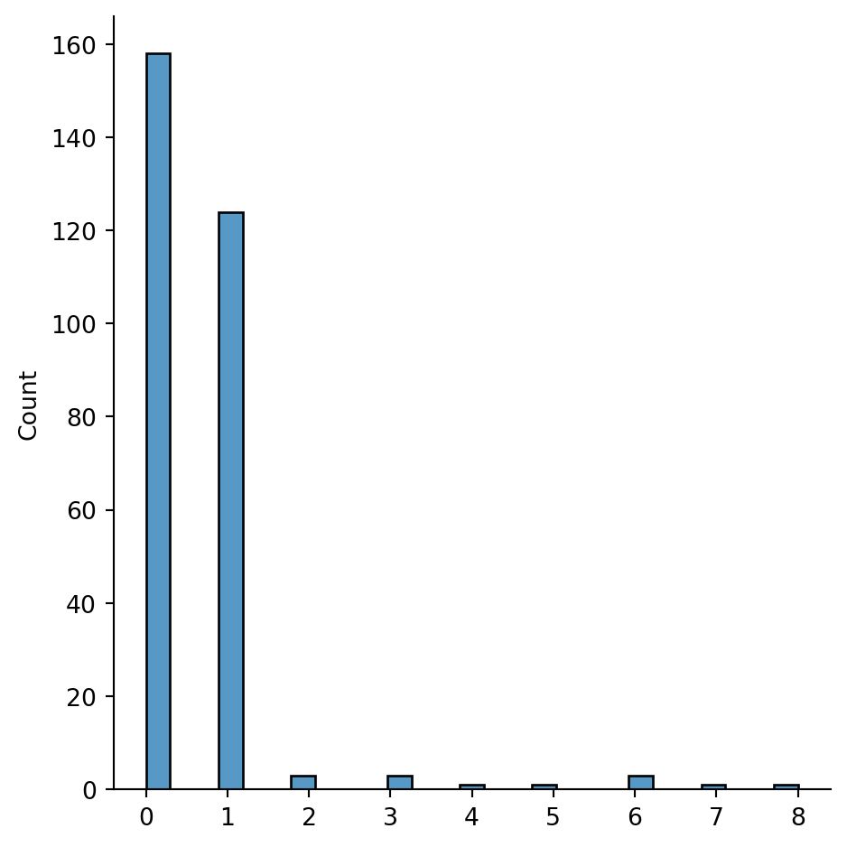

Binding Site Comparison Benchmarks - I - Binding sites on the same protein
binding site
pocket
cavity
pocket comparison
structure-based drug design
First post in a row on setting up a proper benchmark dataset for binding site comparison algorithm evaluation.
Summary
In this article I’ll go through the overall thought process of setting up a benchmark set. For the sake of simplicity I’ll do it for a single target to evaluate the performance of a binding site comparison algorithm. I’ll try to provide code whenever possible against public resources or snippets if a bit of scripting is needed. I am describing my thought process here. I will for sure run into dead ends (I won’t describe all of these 😬) and as a result I’ll have to make some decisions & put other things aside. In order to keep track of things I put aside I’ll use a side-note throughout the post to track all of these & make a summary of how to address or amend them later.
Things to keep in mind
- listing goes here
The target binding site
In order to show the overall process, let’s start with a well studied target & relatively easy target, HSP90. A usual guinea pig since my PhD in Xavier Barril’s lab, but it’s a good example to show without exploring too much in super large protein families in the beginning. I aim to apply the process outlined here later to a thrombin, a trypsin like serine protease, which will likely involve some adjustments.
HSP90
The heat shock protein 90 is a rather abundant protein in the cell and helps during protein folding of not yet formed proteins, or protects already folded proteins from external stress (thermal stress for instance) - thus HSP = Heat Shock Protein. Let’s start with HSP90 alpha from the homo sapiens, even though they are common among eucaryotes. Several kinases are dependent (activated) on HSP90, especially those acting as hub (Citri et al. (2006)). This is one of the reasons why HSP90 has been investigated as potential drug target for treatment of several forms of cancer. The action of HSP is dependent on ATP and the dephosphorylation of this molecule & the ATP binding site is located on a particular are in the N-terminal part of HSP90. This will be the binding site to focus on here.
Why HSP90 as a first example
- HSP90 has a lot of structures available in the public domain.
- It’s not part of any gigantic protein family (kinases, GPCR’s etc), which keeps the initial comparison space to cover a bit smaller.
- The fold of the protein is still conserved among several other proteins, so there’s matter for detecting expected similarities
- It binds ATP, such as a lot of proteins in nature - which is interesting for the if I bind the same molecule I must be similar conundrum.
- The binding site can undergo important conformational changes, which is good to evaluate sensity on conformation
- Water plays a very important role upon binding of small molecules into the ATP binding site
Domain architecture
HSP90 alpha human is composed of two domains: - the N-terminal Histidine kinase, DNA gyrase B and HSP90-like ATPase domain (ranging from amino acid 40 to 193) - the C-terminal HSP90 protein domain (196-714)
The ATP binding site of interest is on the N-terminal part and this is the part that you have the most crystal strucutres for in the RCSB today. A full length Alphafold model available in the public domain. NB: there appears to be another ATP binding site on the C-terminal part, that is only accessible when activated - so interesting to maybe look out for that one as well (Soti et al. (2003)).
The topology of the ATP binding site (N-ter)
Code
Code
Code
Code
Code
Code
The binding site is composed of a section containing the adenin moety which is characterized by a beta sheet at the bottom of the site, and two helices lining the site. The sidechains exposed to the binding site lumen are globally hydrophobic, a part from the very important aspartate 93, which is interacting directly with the adenine moeity. The adenin moeity is sourrounded by water molecules and several of these watersare important hallmarks of several HSP90 binders. The ribose moeity is not forming any H-bonds with the protein itself but has hydroxyls oriented towards the solvent. The ether of the ribose is orented towards the valine 107, adjacent to a rather hydrophobic part of the pocket coated by Y139, F138 and W162. The triphospate is solvent exposed and interacting with a small helix-loop-helix motive which, as we will probably see a bit later part of the more mobile regions of the binding site.
Establishing a reference set
Now we have defined a binding site of interest, let’s try to establish first a few obvious scenarios one might want to cover with a pocket comparison method. In my previous post I stated that the principle use case for binding site comparison methods that I’m focusing on is large scale comparison or screening. The underlying use cases that I’m mainly interested in are NOT protein function prediction, but rather the prediction of potential counter targets, or extracting bound ligands from related binding sites to inform structurally during my compound design cycle.
Let’s consider that we are working on a drug design project on the HSP90 N-terminal ATP binding site and we have our favourite structure of HSP90 as starting point, i.e. 4cwr.
If I want to find similar binding sites to my query binding site vs all known/putative binding sites, what hits I’d expect to get first in the hitlist ?:
- the ATP binding site of other HSP90 alpha human structures with the same overall conformation (more or less) - same sequence & conformation
- the ATP binding site of other HSP90 human isoforms with a similar conformation - likely locally identical sequences & conformation
- the ATP binding site of HSP90 sequences from other species with a similar conformation - locally very similar sequences
- all of the above but with a bit different conformations - conformations
- the ATP binding site of close homologs (sequence - families etc) to the query structure - similar sequences
- the ATP binding sites of proteins sharing the same fold as HSP90 - same fold
- nucleotide binding sites with similar interaction patterns but dissimar fold - same interactions
- all binding sites binding ATP must be similar (provocative on purpose …) - same ligand
- unexpected & unrelated / unknown similarities - nightmare
These first five give a graduation up to which level another ATP binding site could be potentially close to the HSP90 binding site. These are the obvious clusters of sequences, structures & conformations one would expect to find. As a result, one can use this type of graduation also for validating binding site comparison methods. One major difference with the setting I’m laying out here, is that the background data encompasses the full RCSB PDB structures containing all ligand binding sites + putative binding sites (empty clefts). This sets the approach I’m suggesting into stark contrast with previous benchmark sets. Such previous sets were classically composed of a list of expected matches of binding site pairs and decoys (expected mismatches). As Vincent Le Guilloux states it fairly regularly, if you can avoid a threshold effect, avoid it! This is exactly such a case where a discrete split between a match & a mismatch is typically introduced. As a result my background data (what one usually calls a decoy) is the full pocketome and I’ll try to use metrics of success that measure, how many of the potentially expected hits are found before a bulk of less expected hits & why.
In the subsequent sections I’ll go through all the painful steps to create the dataset corresponding the very first & the easiest steps. I’ll cover 2 to 5 in different posts, as already this one here is getting fairly long & complex. The situation 7 & 8 are a bit more tricky to set up. As for 9 - that’s the big issue with binding site comparison benchmarking - you don’t know until you know, but I’ll try to do a bit of my homework on that as well!
1. Same Sequence & conformation
Alright, here we go … the same sequence is the easiest case of all of them & several previous studies included a selection of structures, but as you’ll see even here to do things properly it gets quickly tricky. The following script will cover the required steps: - define the sets of residues of our reference binding site - gather all structures (PDB codes) containing a resolved HSP90 alpha human N terminal domain - filter out structures with mutations on binding site residues compared to the wild type - get an all by all comparison of the binding sites (structurally speaking) which would allow for some rough clustering of conformations
Defining the binding site
On Figure 1 we already displayed a set of amino-acids on the HSP90 structure sourrounding the binding site. Let’s get a list defined by hand getting all residues:
| WT Sequence Position | Chain | Residue |
|---|---|---|
| E47 | A | E47 |
| L48 | A | L48 |
| N51 | A | N51 |
| S52 | A | S52 |
| D54 | A | D54 |
| A55 | A | A55 |
| K58 | A | K58 |
| D93 | A | D93 |
| G95 | A | G95 |
| I96 | A | I96 |
| G97 | A | G97 |
| M98 | A | M98 |
| N106 | A | N106 |
| L107 | A | L107 |
| K112 | A | K112 |
| I131 | A | I131 |
| G132 | A | G132 |
| Q133 | A | Q133 |
| F134 | A | F134 |
| G135 | A | G135 |
| V136 | A | V136 |
| G137 | A | G137 |
| F138 | A | F138 |
| Y139 | A | Y139 |
| T152 | A | Y152 |
| G183 | A | G183 |
| T184 | A | T184 |
| V186 | A | V186 |
Gathering all PDB codes containing the site
Now we have the protein & binding site of interest defined, we can gather all RCSB PDB structures containing that portion without mutations compared to the WT sequence. The uniprot accession for the human HSP90 is P07900 (HS90A_HUMAN) & we will use the WT HSP90 alpha here as reference. NB: there is a known splice variant adding another 123 amino acids in front of ther canonical N-terminal part of the protein.
In order to retrieve all PDB structures of a particular protein sequences one can use various resources. The obvious one to start with would be uniprot, ncbi or the RCSB itself.
From uniprot we can use something the ID mapping service for instance (I go for python directly as the API runs an asynchroneous job):
Code
# Code adapted from here: https://www.uniprot.org/help/id_mapping
import re
import time
import json
import zlib
from urllib.parse import urlparse, parse_qs, urlencode
import requests
from requests.adapters import HTTPAdapter, Retry
POLLING_INTERVAL = 3
API_URL = "https://rest.uniprot.org"
retries = Retry(total=5, backoff_factor=0.25, status_forcelist=[500, 502, 503, 504])
session = requests.Session()
session.mount("https://", HTTPAdapter(max_retries=retries))
def check_response(response):
try:
response.raise_for_status()
except requests.HTTPError:
print(response.json())
raise
def submit_id_mapping(from_db, to_db, ids):
request = requests.post(
f"{API_URL}/idmapping/run",
data={"from": from_db, "to": to_db, "ids": ",".join(ids)},
)
check_response(request)
return request.json()["jobId"]
def get_next_link(headers):
re_next_link = re.compile(r'<(.+)>; rel="next"')
if "Link" in headers:
match = re_next_link.match(headers["Link"])
if match:
return match.group(1)
def check_id_mapping_results_ready(job_id):
while True:
request = session.get(f"{API_URL}/idmapping/status/{job_id}")
check_response(request)
j = request.json()
if "jobStatus" in j:
if j["jobStatus"] == "RUNNING":
print(f"Retrying in {POLLING_INTERVAL}s")
time.sleep(POLLING_INTERVAL)
else:
raise Exception(j["jobStatus"])
else:
return bool(j["results"] or j["failedIds"])
def get_batch(batch_response, file_format, compressed):
batch_url = get_next_link(batch_response.headers)
while batch_url:
batch_response = session.get(batch_url)
batch_response.raise_for_status()
yield decode_results(batch_response, file_format, compressed)
batch_url = get_next_link(batch_response.headers)
def combine_batches(all_results, batch_results, file_format):
if file_format == "json":
for key in ("results", "failedIds"):
if key in batch_results and batch_results[key]:
all_results[key] += batch_results[key]
elif file_format == "tsv":
return all_results + batch_results[1:]
else:
return all_results + batch_results
return all_results
def get_id_mapping_results_link(job_id):
url = f"{API_URL}/idmapping/details/{job_id}"
request = session.get(url)
check_response(request)
return request.json()["redirectURL"]
def decode_results(response, file_format, compressed):
if compressed:
decompressed = zlib.decompress(response.content, 16 + zlib.MAX_WBITS)
if file_format == "json":
j = json.loads(decompressed.decode("utf-8"))
return j
elif file_format == "tsv":
return [line for line in decompressed.decode("utf-8").split("\n") if line]
elif file_format == "xlsx":
return [decompressed]
else:
return decompressed.decode("utf-8")
elif file_format == "json":
return response.json()
elif file_format == "tsv":
return [line for line in response.text.split("\n") if line]
elif file_format == "xlsx":
return [response.content]
return response.text
def print_progress_batches(batch_index, size, total):
n_fetched = min((batch_index + 1) * size, total)
print(f"Fetched: {n_fetched} / {total}")
def get_id_mapping_results_search(url):
parsed = urlparse(url)
query = parse_qs(parsed.query)
file_format = query["format"][0] if "format" in query else "tsv"
if "size" in query:
size = int(query["size"][0])
else:
size = 500
query["size"] = size
compressed = (
query["compressed"][0].lower() == "true" if "compressed" in query else False
)
parsed = parsed._replace(query=urlencode(query, doseq=True))
url = parsed.geturl()
request = session.get(url)
check_response(request)
results = decode_results(request, file_format, compressed)
total = int(request.headers["x-total-results"])
print_progress_batches(0, size, total)
for i, batch in enumerate(get_batch(request, file_format, compressed), 1):
results = combine_batches(results, batch, file_format)
print_progress_batches(i, size, total)
return results
job_id = submit_id_mapping(
from_db="UniProtKB_AC-ID", to_db="PDB", ids=["P07900"]
)
if check_id_mapping_results_ready(job_id):
link = get_id_mapping_results_link(job_id)
results = get_id_mapping_results_search(link)
results_python = json.loads(results[0])["results"]
# print(results_python)
up_pdbcodes=[element["to"].lower() for element in results_python]
print(up_pdbcodes)Fetched: 328 / 328
['1byq', '1osf', '1uy6', '1uy7', '1uy8', '1uy9', '1uyc', '1uyd', '1uye', '1uyf', '1uyg', '1uyh', '1uyi', '1uyk', '1uyl', '1yc1', '1yc3', '1yc4', '1yer', '1yes', '1yet', '2bsm', '2bt0', '2bug', '2byh', '2byi', '2bz5', '2c2l', '2ccs', '2cct', '2ccu', '2fwy', '2fwz', '2h55', '2jjc', '2k5b', '2qf6', '2qfo', '2qg0', '2qg2', '2uwd', '2vci', '2vcj', '2wi1', '2wi2', '2wi3', '2wi4', '2wi5', '2wi6', '2wi7', '2xab', '2xdk', '2xdl', '2xds', '2xdu', '2xdx', '2xhr', '2xht', '2xhx', '2xjg', '2xjj', '2xjx', '2xk2', '2ye2', '2ye3', '2ye4', '2ye5', '2ye6', '2ye7', '2ye8', '2ye9', '2yea', '2yeb', '2yec', '2yed', '2yee', '2yef', '2yeg', '2yeh', '2yei', '2yej', '2yi0', '2yi5', '2yi6', '2yi7', '2yjw', '2yjx', '2yk2', '2yk9', '2ykb', '2ykc', '2yke', '2yki', '2ykj', '3b24', '3b25', '3b26', '3b27', '3b28', '3bm9', '3bmy', '3d0b', '3eko', '3ekr', '3ft5', '3ft8', '3hek', '3hhu', '3hyy', '3hyz', '3hz1', '3hz5', '3inw', '3inx', '3k97', '3k98', '3k99', '3mnr', '3o0i', '3ow6', '3owb', '3owd', '3q6m', '3q6n', '3qdd', '3qtf', '3r4m', '3r4n', '3r4o', '3r4p', '3r91', '3r92', '3rkz', '3rlp', '3rlq', '3rlr', '3t0h', '3t0z', '3t10', '3t1k', '3t2s', '3tuh', '3vha', '3vhc', '3vhd', '3wha', '3wq9', '4aif', '4awo', '4awp', '4awq', '4b7p', '4bqg', '4bqj', '4cgq', '4cgu', '4cgv', '4cgw', '4cwf', '4cwn', '4cwo', '4cwp', '4cwq', '4cwr', '4cws', '4cwt', '4eeh', '4eft', '4efu', '4egh', '4egi', '4egk', '4fcp', '4fcq', '4fcr', '4hy6', '4jql', '4l8z', '4l90', '4l91', '4l93', '4l94', '4lwe', '4lwf', '4lwg', '4lwh', '4lwi', '4nh7', '4nh8', '4o04', '4o05', '4o07', '4o09', '4o0b', '4r3m', '4u93', '4w7t', '4xip', '4xiq', '4xir', '4xit', '4ykq', '4ykr', '4ykt', '4yku', '4ykw', '4ykx', '4yky', '4ykz', '5cf0', '5fnc', '5fnd', '5fnf', '5ggz', '5j20', '5j27', '5j2v', '5j2x', '5j64', '5j6l', '5j6m', '5j6n', '5j80', '5j82', '5j86', '5j8m', '5j8u', '5j9x', '5lny', '5lnz', '5lo0', '5lo1', '5lo5', '5lo6', '5lq9', '5lr1', '5lr7', '5lrl', '5lrz', '5ls1', '5m4e', '5m4h', '5nyh', '5nyi', '5oci', '5od7', '5odx', '5t21', '5vyy', '5xqd', '5xqe', '5xr5', '5xr9', '5xrb', '5xrd', '5xre', '5zr3', '6b99', '6b9a', '6ceo', '6cyg', '6cyh', '6ei5', '6el5', '6eln', '6elo', '6elp', '6ey8', '6ey9', '6eya', '6eyb', '6f1n', '6fcj', '6fdp', '6gp4', '6gp8', '6gpf', '6gph', '6gpo', '6gpp', '6gpr', '6gpt', '6gpw', '6gpy', '6gq6', '6gqr', '6gqs', '6gqu', '6gr1', '6gr3', '6gr4', '6gr5', '6hhr', '6ksq', '6lr9', '6lsz', '6lt8', '6lti', '6ltk', '6n8x', '6olx', '6tn4', '6tn5', '6u98', '6u99', '6u9a', '6u9b', '7dmc', '7krj', '7kw7', '7l7i', '7l7j', '7lsz', '7lt0', '7ry1', '7s8y', '7s8z', '7s90', '7s95', '7s98', '7s99', '7s9f', '7s9g', '7s9h', '7s9i', '8agi', '8agj', '8agl']This results in a list of 328 structures. As uniprot isn’t the only source to get that info, let’s check what comes out of the same type of query against the RCSB PDB, should be the same, right?
Code
inputjson="""{
"query": {
"type": "group",
"nodes": [
{
"type": "terminal",
"service": "text",
"parameters": {
"attribute": "rcsb_polymer_entity_container_identifiers.reference_sequence_identifiers.database_accession",
"operator": "in",
"value": [
"P07900"
]
}
},
{
"type": "terminal",
"service": "text",
"parameters": {
"attribute": "rcsb_polymer_entity_container_identifiers.reference_sequence_identifiers.database_name",
"operator": "exact_match",
"value": "UniProt",
"negation": false
}
}
],
"logical_operator": "and",
"label": "nested-attribute"
},
"return_type": "entry",
"request_options": {
"paginate": {
"start": 0,
"rows": 500
},
"results_content_type": [
"experimental"
],
"sort": [
{
"sort_by": "score",
"direction": "desc"
}
],
"scoring_strategy": "combined"
}
}"""
url="https://search.rcsb.org/rcsbsearch/v2/query?json="+inputjson
response=requests.get(url)
tmp=json.loads(response.text)["result_set"]
rcsb_pdbcodes=[element["identifier"].lower() for element in tmp]
print(len(rcsb_pdbcodes))
print(rcsb_pdbcodes)331
['1byq', '1osf', '1uy6', '1uy7', '1uy8', '1uy9', '1uyc', '1uyd', '1uye', '1uyf', '1uyg', '1uyh', '1uyi', '1uyk', '1uyl', '1yc1', '1yc3', '1yc4', '1yer', '1yes', '1yet', '2bsm', '2bt0', '2bug', '2byh', '2byi', '2bz5', '2c2l', '2ccs', '2cct', '2ccu', '2fwy', '2fwz', '2h55', '2jjc', '2k5b', '2qf6', '2qfo', '2qg0', '2qg2', '2uwd', '2vci', '2vcj', '2wi1', '2wi2', '2wi3', '2wi4', '2wi5', '2wi6', '2wi7', '2xab', '2xdk', '2xdl', '2xds', '2xdu', '2xdx', '2xhr', '2xht', '2xhx', '2xjg', '2xjj', '2xjx', '2xk2', '2ye2', '2ye3', '2ye4', '2ye5', '2ye6', '2ye7', '2ye8', '2ye9', '2yea', '2yeb', '2yec', '2yed', '2yee', '2yef', '2yeg', '2yeh', '2yei', '2yej', '2yi0', '2yi5', '2yi6', '2yi7', '2yjw', '2yjx', '2yk2', '2yk9', '2ykb', '2ykc', '2yke', '2yki', '2ykj', '3b24', '3b25', '3b26', '3b27', '3b28', '3bm9', '3bmy', '3d0b', '3eko', '3ekr', '3ft5', '3ft8', '3hek', '3hhu', '3hyy', '3hyz', '3hz1', '3hz5', '3inw', '3inx', '3k97', '3k98', '3k99', '3mnr', '3o0i', '3ow6', '3owb', '3owd', '3q6m', '3q6n', '3qdd', '3qtf', '3r4m', '3r4n', '3r4o', '3r4p', '3r91', '3r92', '3rkz', '3rlp', '3rlq', '3rlr', '3t0h', '3t0z', '3t10', '3t1k', '3t2s', '3tuh', '3vha', '3vhc', '3vhd', '3wha', '3wq9', '4aif', '4awo', '4awp', '4awq', '4b7p', '4bqg', '4bqj', '4cgq', '4cgu', '4cgv', '4cgw', '4cwf', '4cwn', '4cwo', '4cwp', '4cwq', '4cwr', '4cws', '4cwt', '4eeh', '4eft', '4efu', '4egh', '4egi', '4egk', '4fcp', '4fcq', '4fcr', '4hy6', '4jql', '4l8z', '4l90', '4l91', '4l93', '4l94', '4lwe', '4lwf', '4lwg', '4lwh', '4lwi', '4nh7', '4nh8', '4o04', '4o05', '4o07', '4o09', '4o0b', '4r3m', '4u93', '4w7t', '4xip', '4xiq', '4xir', '4xit', '4ykq', '4ykr', '4ykt', '4yku', '4ykw', '4ykx', '4yky', '4ykz', '5cf0', '5fnc', '5fnd', '5fnf', '5ggz', '5j20', '5j27', '5j2v', '5j2x', '5j64', '5j6l', '5j6m', '5j6n', '5j80', '5j82', '5j86', '5j8m', '5j8u', '5j9x', '5lny', '5lnz', '5lo0', '5lo1', '5lo5', '5lo6', '5lq9', '5lr1', '5lr7', '5lrl', '5lrz', '5ls1', '5m4e', '5m4h', '5nyh', '5nyi', '5oci', '5od7', '5odx', '5t21', '5vyy', '5xqd', '5xqe', '5xr5', '5xr9', '5xrb', '5xrd', '5xre', '5zr3', '6b99', '6b9a', '6ceo', '6cyg', '6cyh', '6ei5', '6el5', '6eln', '6elo', '6elp', '6ey8', '6ey9', '6eya', '6eyb', '6f1n', '6fcj', '6fdp', '6gp4', '6gp8', '6gpf', '6gph', '6gpo', '6gpp', '6gpr', '6gpt', '6gpw', '6gpy', '6gq6', '6gqr', '6gqs', '6gqu', '6gr1', '6gr3', '6gr4', '6gr5', '6hhr', '6ksq', '6lr9', '6lsz', '6lt8', '6lti', '6ltk', '6n8x', '6olx', '6tn4', '6tn5', '6u98', '6u99', '6u9a', '6u9b', '7dmc', '7krj', '7kw7', '7l7i', '7l7j', '7lsz', '7lt0', '7rxz', '7ry0', '7ry1', '7s8y', '7s8z', '7s90', '7s95', '7s98', '7s99', '7s9f', '7s9g', '7s9h', '7s9i', '7ur3', '8agi', '8agj', '8agl']From the RCSB we get 3 more structures than from Uniprot. Let’s see what the difference between both lists of pdb codes is:
Again a bit worrysome difference between the RCSB & uniprot. An NCBI search seems to give yet another number of 273 structures. NB: when you have a look at the P07900 sequence cluster page of the RCSB, one gets 332 hits instead. So the RCSB seems to handle the uniprot accession code a bit differently from the Polymer Entity Group ID (or there’s an issue with the data of one structure).
Things to keep in mind
- Uniprot accession vs polymer entity group ID handling to be clarified with RCSB folks
As we can see in Table 1 the residues encompassing our binding site of interest range from amino acid E47 on the WT sequence to V186. So now we need to know whether the region expressed & resolved includes the region of interest. This can now be done with a graphql query versus the RCSB (after a lot of trial & error 😒 ). NB: I directly filter out structures (18) that contain mutations versus wild type.
Code
query="""
{
entries(entry_ids: """+str(rcsb_pdbcodes).replace("'","\"")+""")
{
rcsb_id
polymer_entities {
rcsb_polymer_entity_container_identifiers {
entity_id
asym_ids
auth_asym_ids
reference_sequence_identifiers {
database_name
database_accession
}
}
rcsb_polymer_entity_align{
reference_database_name
aligned_regions{
entity_beg_seq_id
length
ref_beg_seq_id
}
}
entity_poly {
pdbx_seq_one_letter_code_can
rcsb_sample_sequence_length
type
rcsb_mutation_count
}
rcsb_polymer_entity {
formula_weight
}
}
}
}
"""
# ugly I know, but does the job here
def extractSequenceRegions(data):
result={}
for entry in data:
result[entry["rcsb_id"]]=[]
for entity in entry["polymer_entities"]:
# print(entity["rcsb_polymer_entity_container_identifiers"])
if entity["entity_poly"]["rcsb_mutation_count"]==0:
for idx,identifier in enumerate(entity["rcsb_polymer_entity_container_identifiers"]["reference_sequence_identifiers"]):
if identifier["database_name"]=="UniProt" and identifier["database_accession"]=="P07900":
if entity["rcsb_polymer_entity_align"][idx]["reference_database_name"]=="UniProt":
for region in entity["rcsb_polymer_entity_align"][idx]["aligned_regions"]:
result[entry["rcsb_id"]].append((region["ref_beg_seq_id"],region["ref_beg_seq_id"]+region["length"]))
return result
residuelist=[47,48,51,52,54,55,58,93,95,96,97,98,106,107,112,131,132,133,134,135,136,137,138,139,152,183,184,186]
url=f"https://data.rcsb.org/graphql?query={query}"
response=requests.get(url)
dataRCSBGQL=response.json()["data"]["entries"]
resolved_regions=extractSequenceRegions(dataRCSBGQL)
selectedPdbCodes=[]
for pdbCode in resolved_regions:
for mapping in resolved_regions[pdbCode]:
if(all(i>=mapping[0] and i<=mapping[1] for i in residuelist)):
selectedPdbCodes.append(pdbCode)
print(selectedPdbCodes)
print(str(len(selectedPdbCodes)) + " structures identified")['1BYQ', '1OSF', '1UY6', '1UY7', '1UY8', '1UY9', '1UYC', '1UYD', '1UYE', '1UYF', '1UYG', '1UYH', '1UYI', '1UYK', '1UYL', '1YC1', '1YC3', '1YC4', '1YER', '1YES', '1YET', '2BSM', '2BT0', '2BYH', '2BYI', '2BZ5', '2CCS', '2CCT', '2CCU', '2FWY', '2FWZ', '2H55', '2JJC', '2K5B', '2QF6', '2QFO', '2QG0', '2QG2', '2UWD', '2VCI', '2VCJ', '2WI1', '2WI2', '2WI3', '2WI4', '2WI5', '2WI6', '2WI7', '2XAB', '2XDK', '2XDL', '2XDS', '2XDU', '2XDX', '2XHR', '2XHT', '2XHX', '2XJG', '2XJJ', '2XJX', '2XK2', '2YE2', '2YE3', '2YE4', '2YE5', '2YE6', '2YE7', '2YE8', '2YE9', '2YEA', '2YEB', '2YEC', '2YED', '2YEE', '2YEF', '2YEG', '2YEH', '2YEI', '2YEJ', '2YI0', '2YI5', '2YI6', '2YI7', '2YJW', '2YJX', '2YK2', '2YK9', '2YKB', '2YKC', '2YKE', '2YKI', '2YKJ', '3B24', '3B25', '3B26', '3B27', '3B28', '3BM9', '3BMY', '3D0B', '3EKO', '3EKR', '3FT5', '3FT8', '3HEK', '3HHU', '3HYY', '3HYZ', '3HZ1', '3HZ5', '3INW', '3INX', '3K97', '3K98', '3K99', '3MNR', '3O0I', '3OW6', '3OWB', '3OWD', '3QDD', '3QTF', '3R4M', '3R4N', '3R4O', '3R4P', '3R91', '3R92', '3RKZ', '3RLP', '3RLQ', '3RLR', '3T0H', '3T0Z', '3T10', '3T1K', '3T2S', '3TUH', '3VHA', '3VHC', '3VHD', '3WHA', '3WQ9', '4AWO', '4AWP', '4AWQ', '4B7P', '4BQG', '4BQJ', '4CWF', '4CWN', '4CWO', '4CWP', '4CWQ', '4CWR', '4CWS', '4CWT', '4EEH', '4EFT', '4EFU', '4EGH', '4EGI', '4EGK', '4FCP', '4FCQ', '4FCR', '4HY6', '4JQL', '4L8Z', '4L90', '4L91', '4L93', '4L94', '4LWE', '4LWF', '4LWG', '4LWH', '4LWI', '4NH7', '4NH8', '4O04', '4O05', '4O07', '4O09', '4O0B', '4R3M', '4U93', '4W7T', '4XIP', '4XIQ', '4XIR', '4XIT', '4YKQ', '4YKR', '4YKT', '4YKU', '4YKW', '4YKX', '4YKY', '4YKZ', '5CF0', '5FNC', '5FND', '5FNF', '5GGZ', '5J20', '5J27', '5J2V', '5J2X', '5J64', '5J6L', '5J6M', '5J6N', '5J82', '5J86', '5J8M', '5J8U', '5J9X', '5LNY', '5LNZ', '5LO0', '5LO1', '5LO5', '5LO6', '5LQ9', '5LR1', '5LR7', '5LRL', '5LRZ', '5LS1', '5M4E', '5M4H', '5NYH', '5NYI', '5OCI', '5OD7', '5ODX', '5T21', '5VYY', '5XQD', '5XQE', '5XR5', '5XR9', '5XRB', '5XRD', '5XRE', '5ZR3', '6B99', '6B9A', '6CEO', '6CYG', '6CYH', '6EI5', '6EL5', '6ELN', '6ELO', '6ELP', '6EY8', '6EY9', '6EYA', '6EYB', '6F1N', '6FCJ', '6GPR', '6GPT', '6GPW', '6GPY', '6GQ6', '6GQR', '6HHR', '6LR9', '6LSZ', '6LT8', '6LTI', '6LTK', '6N8X', '6TN4', '6TN5', '6U99', '6U9B', '7DMC', '7KRJ', '7KW7', '7L7I', '7L7J', '7LSZ', '7LT0', '7S8Y', '7S8Z', '7S90', '7S95', '7S98', '7S99', '7S9F', '7S9G', '7S9H', '7S9I', '7UR3', '8AGI']
299 structures identifiedNow we have our list of 299 WT structures with the ATP binding site resolved. NB: you might have noticed that I’m not taking the resolution, Rfree or Rwork into account for the structure selection here. During the subsequent clustering step I’ll still check if all residues of interest of the binding site are well resolved (some might not be).
Things to keep in mind
- Uniprot accession vs polymer entity group ID handling to be clarified with RCSB folks
- Don’t forget to check if all sidechains of the binding site are resolved in the selected structures
Cluster by conformation
The ATP binding site of HSP90 can be fairly flexible in specific regions. In order to evaluate a pocket comparison method’s sensitivity to sidechain or backbone movements we can split down the 299 structures we just identified to smaller clusters of very similar conformations. This will allow us later to run tests of intra vs extra cluster pocket comparison using different algorithms.
Already doing all the previous work was not as straightforward what one might have expected, but it’s still doable. Especially with the API available now from the RCSB. A few years back one had to rely on predictions from the SIFTS project from Dana et al. (2018) & Velankar et al. (2012).
Structural superimpositioning poses the following challenges here:
- shall we use all chains or all if the asymetric unit contains several copies of the same protein?
- In theory we should assess if there are major differences between monomers or use the monomers as expected hit we should retrieve when comparing binding sites. Both should be covered by the overall dataset here so I’ll be lazy and will focus on the first chain
- shall we use a standard Kabsch superimpositioning (local/global?) & overall root mean square deviation to assess the similarity between binding site conformations?
- If I’m bringing this thing up, I think it’s important to address it properly. I’ll try to explain a bit in more detail why.
Things to keep in mind
- Uniprot accession vs polymer entity group ID handling to be clarified with RCSB folks
- Don’t forget to check if all sidechains of the binding site are resolved in the selected structures
- Treat homo-multimers rationally in the data-set construction
Why isn’t standard superimpositioning enough?
I don’t have to write a ton of text here, citing the single, most relevant paper from Damm and Carlson (2006) should be argument enough 😁
But to showcase maybe a bit more clearly. HSP90 can adopt several conformations in different areas of the binding site:
Code
Code
Code
Code
Code
Code
So if you superimpose binding site residues only with a classical Kabsch algorithm (Kabsch (1976)) you might alter significantly the positions of all binding site residues that appear to be stable (beta sheet & helix 44-58 for instance). Also clustering such superposed structures on differences on amino acid positions will yield sub-optimal results.
Furthermore, one should decouple the act of superimposing two structures & the act of calculating the similarity of conformations once they are superimposed. With the classical Kabsch algorithm & the resulting RMSD, all of this is intertwined.
Kufareva and Abagyan (2011) already wrote about that topic and stated the properties of an ideal protein similarity measure as:
An ideal measure should allow both a single ‘summary’ number within a fixed range (e.g. 0% to 100%) and an underlying detailed vector or matrix representation. The single number must distinguish well between related (correct) and non-related (incorrect) structure pairs, i.e. its distributions on the two sets must overlap to a minimal possible degree. It has to be relevant, i.e. capture the nature of protein folding or protein interaction determinants rather than satisfy simple geometric criteria. It has to have the minimal number of parameters, which in turn need to be well justified and understandable. It has to be stable and robust against minor or fractional (affecting a small fraction of the model) experimental and modeling errors; such changes in the structures should not lead to major leaps in the calculated similarity measure values. It has to capture the similarities or differences between the structures at any given level of accuracy/resolution. Ideally, it should have an intuitive visual interpretation.
Kufareva and Abagyan (2011) however conclude that even distance weighted optimization & related cartesian space metrics are always prone to several issues. In the end they deem that contact based metrics are more robust. So this is what I’ll be using here.
Contact based conformation comparison
Here I’m going to use some tools already existing in MDanalysis, a popular python toolkit for MD trajectory analysis. It contains already prebuilt funtions to calculate the contact maps of a protein structure. But overall, you can achieve the same thing with any other toolkit & a lot of looping.
import MDAnalysis as mda
import numpy as np
from scipy.spatial.distance import cdist
from MDAnalysis.analysis import distances
import seaborn as sns
import gemmi
filename="3t0z.pdb"
u = mda.Universe(filename)
residue_seqnums=[47,48,51,52,54,55,58,93,95,96,97,98,106,107,112,131,132,133,134,135,136,137,138,139,152,183,184,186]
residues = u.select_atoms('protein and name CA and resnum {}'.format(' '.join(map(str, residue_seqnums))))
print(residues)
distances3t0z = distances.distance_array(residues.positions, residues.positions)
sns.heatmap(distances3t0z,yticklabels=residue_seqnums,xticklabels=residue_seqnums,cmap="Blues",square=True)<AtomGroup [<Atom 302: CA of type C of resname GLU, resid 47 and segid A and altLoc >, <Atom 311: CA of type C of resname LEU, resid 48 and segid A and altLoc >, <Atom 333: CA of type C of resname ASN, resid 51 and segid A and altLoc >, ..., <Atom 1331: CA of type C of resname GLY, resid 183 and segid A and altLoc >, <Atom 1335: CA of type C of resname THR, resid 184 and segid A and altLoc >, <Atom 1351: CA of type C of resname VAL, resid 186 and segid A and altLoc >]><Axes: >
The code above has two main limitations that come to my mind. The first one is that the residue numbering I’m using is the canonical uniprot sequence one, but I’m not assured the residue numbering is the same in all HSP90 structures I selected. The second one is that I’m only computing distances between alpha carbons. This implies that I’ll only be able to measure differences in backbone conformations and as such important conformational changes. I won’t be able to detect subtle side-chain conformational changes. One could use an all atom distance matrix, or compute the center of mass for each residue & compare that instead. The time being let’s stick to alpha carbons. Also, I dont need to check for missing atoms in the structures for now with this simplification.
Things to keep in mind
- Uniprot accession vs polymer entity group ID handling to be clarified with RCSB folks
- Don’t forget to check if all sidechains of the binding site are resolved in the selected structures
- Treat homo-multimers rationally in the data-set construction
- Handle canonical residue numbering properly in distanceMatrix code
- Consider also optional side-chain sensitive distance calculations
Now let’s calculate the same distance matrix on another structure, for instance 4cwr.
Code
import matplotlib.pyplot as plt
filename="pdbs/4cwr_aligned.pdb"
u = mda.Universe(filename)
residues = u.select_atoms('protein and name CA and resnum {}'.format(' '.join(map(str, residue_seqnums))))
distances4cwr = distances.distance_array(residues.positions, residues.positions)
fig, ax = plt.subplots(1,2)
sns.heatmap(distances3t0z,yticklabels=residue_seqnums,xticklabels=residue_seqnums,cmap="Blues",square=True,ax=ax[0])
sns.heatmap(distances4cwr,yticklabels=residue_seqnums,xticklabels=residue_seqnums,cmap="Blues",square=True,ax=ax[1])
plt.show()
Visual inspection won’t help a lot here. Let’s calculate the difference between the two matrices. I’ll call the resulting matrix a contact difference matrix from hereon. And check if we can spot the residues we observe to be moving significantly.
Code
distancematrix=np.abs(distances3t0z-distances4cwr)
sns.heatmap(distancematrix,yticklabels=residue_seqnums,xticklabels=residue_seqnums,cmap="Blues",square=True)
plt.show()
That looks already a lot nicer. Here we can see that residues 106, 107 and 112 clearly move a lot, comparing both structures. Also the section 131-139 shows signficant motion when compared to residues 41-98. To understand better what is going on, let’s show both structures overlayed again & highlight & label all implicated residues.
Code
Code
Code
Code
Code
Code
Code
Code
The distance matrix nicely catches the small shift of the 131-139 region. There is a subtle backbone movement ongoing. Regarding residues 106, 107 and 112 they are involved in a helical region that unfolds in one of the two structures. Observing that none of the residues between 107 and 112 are in the distance matrix is due to the fact that we did our initial residue selection based on a single reference structure to define the binding site. In the structure 4cwr this segment however structures itself into a helix. By doing so for instance I11O is now exposed to the binding site lumen. As a result, do we need to adjust the binding site residue selection? In theory, if we want to properly track & understand structural changes in the dataset at hand, yes. In this particular example the difference is captured by the sourrounding residues 106-107 and 112. So let’s put it on my list of things to keep in mind which is getting longer 😱.
Things to keep in mind
- Uniprot accession vs polymer entity group ID handling to be clarified with RCSB folks
- Don’t forget to check if all sidechains of the binding site are resolved in the selected structures
- Treat homo-multimers rationally in the data-set construction
- Handle canonical residue numbering properly in distanceMatrix code
- Consider also optional side-chain sensitive distance calculations
- What to do with large motions implicating new residues in binding sites?
I’m interested to check on how such a contact difference matrix looks like on very similar structures, so I prepared an example between 4cwr & 1uyd, which a very close (as a lot of the HSP90 alpha human structures actually).
Code
filename="pdbs/1uyd.pdb"
u = mda.Universe(filename)
residues = u.select_atoms('protein and name CA and resnum {}'.format(' '.join(map(str, residue_seqnums))))
distances1uyd = distances.distance_array(residues.positions, residues.positions)
distancematrix=np.abs(distances4cwr-distances1uyd)
sns.heatmap(distancematrix,yticklabels=residue_seqnums,xticklabels=residue_seqnums,cmap="Blues",square=True,vmax=3.7)
plt.show()
I used the same color scale as on Figure 4 on purpose, just to have something slightly comparable (visually). However, if you look in more detail, you’ll notice that there are differences (around 0.7A max) between parts of the binding site. But obviously, they are less drastic conformational changes than what we observed before with the comparison of 3t0z & 4cwr.
Last example that I wanted to check is the impact on such a matrix of the closed conformation of the binding site. This is structure 7l7j which was already displayed in red in Figure 2 before.
Code
filename="pdbs/7l7j_aligned.pdb"
u = mda.Universe(filename)
residues = u.select_atoms('protein and chainID A and name CA and resnum {}'.format(' '.join(map(str, residue_seqnums))))
distances7l7j = distances.distance_array(residues.positions, residues.positions)
distancematrix=np.abs(distances4cwr-distances7l7j)
sns.heatmap(distancematrix,yticklabels=residue_seqnums,xticklabels=residue_seqnums,cmap="Blues",square=True)
plt.show()
In the figure above I didn’t set a maximum to the color scale. This way you can see the full extent of movements observed especially around residue 112 - 133. Again, let’s repeat the exercice and plot the residues that appear to be significantly moving here: 106,112, 131-133
Code
Code
Code
Code
Code
Code
Code
Code
The conformational changes are very important (as expected). Furthermore the selection of residues one could extract from the distance matrix is relevant also versus what can be observed above.
Clustering contact (distance) matrices
Now, in order to know whether one structure is close to another we can use these contact matrices calculated before & compare these one to another. The comparison between 4cwr & 3t0z results in a contact difference matrix (Figure 4). The comparison of 4cwr and 1uyd results in another contact difference matrix (Figure 6). Let’s try to compute an average of each contact difference matrix and see what we get.
Code
distanceMatrixList=[distances4cwr,distances3t0z,distances1uyd,distances7l7j]
labels=["4cwr","3t0z","1uyd","7l7j"]
nMatrices=len(distanceMatrixList)
result=np.zeros((nMatrices,nMatrices))
for i in range(nMatrices):
for j in range(nMatrices):
if i==j:
result[i][j]=0.0
elif i<j:
result[i][j]=np.mean(np.abs(distanceMatrixList[i]-distanceMatrixList[j]))
result[j][i]=result[i][j]
sns.heatmap(result,yticklabels=labels,xticklabels=labels,cmap="Blues",square=True)
plt.show()
That looks already rather promising. We expect to see 4cwr & 1uyd to be close to each other, and 3t0z to be closer to 4cwr than to 7l7j. However, 7l7j is not close to any of the other structures and likely closest to 3t0z (as both have the helical unfolding around residues 107-112). Now we have a distance matrix that we can feed into a clustering algorithm. I’m not a big fan of k-means as I don’t know how many clusters I expect beforehand. In the end I want the dataset preparation steps I’m going through here to be as automated as possible. So I’ll use a hierarchical clustering algorithm instead.
Code
import scipy
import scipy.spatial.distance as ssd
distArray = ssd.squareform(result)
clusters=scipy.cluster.hierarchy.linkage(distArray, method='single', metric='euclidean')
scipy.cluster.hierarchy.dendrogram(clusters,labels=labels,leaf_rotation=90)
plt.show()
Now that I have this, I can cut the result at any given distance and get the clusters. Obviously this example is a bit too tiny to draw any interesting insights. So in order to get ready for our first full dataset, we need to repeat the whole process for all the structures we’ve identified earlier. In order to do so I first need to properly address two items on my todo list that I tracked as side notes in the previous sections (I’ll put it here again as reference).
Things to keep in mind
- Uniprot accession vs polymer entity group ID handling to be clarified with RCSB folks
- Don’t forget to check if all sidechains of the binding site are resolved in the selected structures
- Treat homo-multimers rationally in the data-set construction
- Handle canonical residue numbering properly in distanceMatrix code
- Consider also optional side-chain sensitive distance calculations
- What to do with large motions implicating new residues in binding sites?
- I need to verify that all structures have a canonical uniprot sequence residue numbering. If not I need to map the residue numbers to the canonical uniprot sequence.
- I need to know which chain I use beforehand (7l7j contains two different proteins for instance - so just sticking without a selection is not an option)
Automating things
The first issue previously mentioned was briefly checked against 3decision, where I could see that none of the RCSB structures have sequence mapping. So in the case of the selected HSP90 structures and this binding site, it’s not an issue to perform residue selections using the residue numbers I used here. You could extract that kind of info using a graphql query from the RCSB as well, but I’ll pass here and will come back to that if / when needed. In order to address the second of the previously mentioned issue I am going to adjust a bit the graphql query I used earlier and track for each structure which chain corresponds to HSP90 containing the binding site we are interested in here.
Code
# here we can reuse the already retrieved data from the GraphQL query that we did earlier against the RCSB, because it already contains the information we need.
# a bit of rewrite of the function we had before (still very ugly, feel free to make it pretty ;)
def extractSequenceRegionsAndChains(data):
result={}
for entry in data:
result[entry["rcsb_id"]]=[]
for entity in entry["polymer_entities"]:
# print(entity["rcsb_polymer_entity_container_identifiers"])
if entity["entity_poly"]["rcsb_mutation_count"]==0:
chain_ids=entity["rcsb_polymer_entity_container_identifiers"]["auth_asym_ids"]
for idx,identifier in enumerate(entity["rcsb_polymer_entity_container_identifiers"]["reference_sequence_identifiers"]):
if identifier["database_name"]=="UniProt" and identifier["database_accession"]=="P07900":
if entity["rcsb_polymer_entity_align"][idx]["reference_database_name"]=="UniProt":
for region in entity["rcsb_polymer_entity_align"][idx]["aligned_regions"]:
result[entry["rcsb_id"]].append((region["ref_beg_seq_id"],region["ref_beg_seq_id"]+region["length"]))
result[entry["rcsb_id"]].append(chain_ids)
return result
# residuelist=[47,48,51,52,54,55,58,93,95,96,97,98,106,107,112,131,132,133,134,135,136,137,138,139,152,183,184,186]
resolved_regions=extractSequenceRegionsAndChains(dataRCSBGQL)
selectedPdbCodesAndChains=[]
for pdbCode in resolved_regions:
mapping = resolved_regions[pdbCode]
if(len(mapping)>0 and all(i>=mapping[0][0] and i<=mapping[0][1] for i in residuelist)):
selectedPdbCodesAndChains.append({"pdbCode":pdbCode,"chain":mapping[1][0]})
print(selectedPdbCodesAndChains)
# print(str(len(selectedPdbCodes)) + " structures identified")[{'pdbCode': '1BYQ', 'chain': 'A'}, {'pdbCode': '1OSF', 'chain': 'A'}, {'pdbCode': '1UY6', 'chain': 'A'}, {'pdbCode': '1UY7', 'chain': 'A'}, {'pdbCode': '1UY8', 'chain': 'A'}, {'pdbCode': '1UY9', 'chain': 'A'}, {'pdbCode': '1UYC', 'chain': 'A'}, {'pdbCode': '1UYD', 'chain': 'A'}, {'pdbCode': '1UYE', 'chain': 'A'}, {'pdbCode': '1UYF', 'chain': 'A'}, {'pdbCode': '1UYG', 'chain': 'A'}, {'pdbCode': '1UYH', 'chain': 'A'}, {'pdbCode': '1UYI', 'chain': 'A'}, {'pdbCode': '1UYK', 'chain': 'A'}, {'pdbCode': '1UYL', 'chain': 'A'}, {'pdbCode': '1YC1', 'chain': 'A'}, {'pdbCode': '1YC3', 'chain': 'A'}, {'pdbCode': '1YC4', 'chain': 'A'}, {'pdbCode': '1YER', 'chain': 'A'}, {'pdbCode': '1YES', 'chain': 'A'}, {'pdbCode': '1YET', 'chain': 'A'}, {'pdbCode': '2BSM', 'chain': 'A'}, {'pdbCode': '2BT0', 'chain': 'A'}, {'pdbCode': '2BYH', 'chain': 'A'}, {'pdbCode': '2BYI', 'chain': 'A'}, {'pdbCode': '2BZ5', 'chain': 'A'}, {'pdbCode': '2CCS', 'chain': 'A'}, {'pdbCode': '2CCT', 'chain': 'A'}, {'pdbCode': '2CCU', 'chain': 'A'}, {'pdbCode': '2FWY', 'chain': 'A'}, {'pdbCode': '2FWZ', 'chain': 'A'}, {'pdbCode': '2H55', 'chain': 'A'}, {'pdbCode': '2JJC', 'chain': 'A'}, {'pdbCode': '2K5B', 'chain': 'A'}, {'pdbCode': '2QF6', 'chain': 'A'}, {'pdbCode': '2QFO', 'chain': 'A'}, {'pdbCode': '2QG0', 'chain': 'A'}, {'pdbCode': '2QG2', 'chain': 'A'}, {'pdbCode': '2UWD', 'chain': 'A'}, {'pdbCode': '2VCI', 'chain': 'A'}, {'pdbCode': '2VCJ', 'chain': 'A'}, {'pdbCode': '2WI1', 'chain': 'A'}, {'pdbCode': '2WI2', 'chain': 'A'}, {'pdbCode': '2WI3', 'chain': 'A'}, {'pdbCode': '2WI4', 'chain': 'A'}, {'pdbCode': '2WI5', 'chain': 'A'}, {'pdbCode': '2WI6', 'chain': 'A'}, {'pdbCode': '2WI7', 'chain': 'A'}, {'pdbCode': '2XAB', 'chain': 'A'}, {'pdbCode': '2XDK', 'chain': 'A'}, {'pdbCode': '2XDL', 'chain': 'A'}, {'pdbCode': '2XDS', 'chain': 'A'}, {'pdbCode': '2XDU', 'chain': 'A'}, {'pdbCode': '2XDX', 'chain': 'A'}, {'pdbCode': '2XHR', 'chain': 'A'}, {'pdbCode': '2XHT', 'chain': 'A'}, {'pdbCode': '2XHX', 'chain': 'A'}, {'pdbCode': '2XJG', 'chain': 'A'}, {'pdbCode': '2XJJ', 'chain': 'A'}, {'pdbCode': '2XJX', 'chain': 'A'}, {'pdbCode': '2XK2', 'chain': 'A'}, {'pdbCode': '2YE2', 'chain': 'A'}, {'pdbCode': '2YE3', 'chain': 'A'}, {'pdbCode': '2YE4', 'chain': 'A'}, {'pdbCode': '2YE5', 'chain': 'A'}, {'pdbCode': '2YE6', 'chain': 'A'}, {'pdbCode': '2YE7', 'chain': 'A'}, {'pdbCode': '2YE8', 'chain': 'A'}, {'pdbCode': '2YE9', 'chain': 'A'}, {'pdbCode': '2YEA', 'chain': 'A'}, {'pdbCode': '2YEB', 'chain': 'A'}, {'pdbCode': '2YEC', 'chain': 'A'}, {'pdbCode': '2YED', 'chain': 'A'}, {'pdbCode': '2YEE', 'chain': 'A'}, {'pdbCode': '2YEF', 'chain': 'A'}, {'pdbCode': '2YEG', 'chain': 'A'}, {'pdbCode': '2YEH', 'chain': 'A'}, {'pdbCode': '2YEI', 'chain': 'A'}, {'pdbCode': '2YEJ', 'chain': 'A'}, {'pdbCode': '2YI0', 'chain': 'A'}, {'pdbCode': '2YI5', 'chain': 'A'}, {'pdbCode': '2YI6', 'chain': 'A'}, {'pdbCode': '2YI7', 'chain': 'A'}, {'pdbCode': '2YJW', 'chain': 'A'}, {'pdbCode': '2YJX', 'chain': 'A'}, {'pdbCode': '2YK2', 'chain': 'A'}, {'pdbCode': '2YK9', 'chain': 'A'}, {'pdbCode': '2YKB', 'chain': 'A'}, {'pdbCode': '2YKC', 'chain': 'A'}, {'pdbCode': '2YKE', 'chain': 'A'}, {'pdbCode': '2YKI', 'chain': 'A'}, {'pdbCode': '2YKJ', 'chain': 'A'}, {'pdbCode': '3B24', 'chain': 'A'}, {'pdbCode': '3B25', 'chain': 'A'}, {'pdbCode': '3B26', 'chain': 'A'}, {'pdbCode': '3B27', 'chain': 'A'}, {'pdbCode': '3B28', 'chain': 'A'}, {'pdbCode': '3BM9', 'chain': 'A'}, {'pdbCode': '3BMY', 'chain': 'A'}, {'pdbCode': '3D0B', 'chain': 'A'}, {'pdbCode': '3EKO', 'chain': 'A'}, {'pdbCode': '3EKR', 'chain': 'A'}, {'pdbCode': '3FT5', 'chain': 'A'}, {'pdbCode': '3FT8', 'chain': 'A'}, {'pdbCode': '3HEK', 'chain': 'A'}, {'pdbCode': '3HHU', 'chain': 'A'}, {'pdbCode': '3HYY', 'chain': 'A'}, {'pdbCode': '3HYZ', 'chain': 'A'}, {'pdbCode': '3HZ1', 'chain': 'A'}, {'pdbCode': '3HZ5', 'chain': 'A'}, {'pdbCode': '3INW', 'chain': 'A'}, {'pdbCode': '3INX', 'chain': 'A'}, {'pdbCode': '3K97', 'chain': 'A'}, {'pdbCode': '3K98', 'chain': 'A'}, {'pdbCode': '3K99', 'chain': 'A'}, {'pdbCode': '3MNR', 'chain': 'P'}, {'pdbCode': '3O0I', 'chain': 'A'}, {'pdbCode': '3OW6', 'chain': 'A'}, {'pdbCode': '3OWB', 'chain': 'A'}, {'pdbCode': '3OWD', 'chain': 'A'}, {'pdbCode': '3QDD', 'chain': 'A'}, {'pdbCode': '3QTF', 'chain': 'A'}, {'pdbCode': '3R4M', 'chain': 'A'}, {'pdbCode': '3R4N', 'chain': 'A'}, {'pdbCode': '3R4O', 'chain': 'A'}, {'pdbCode': '3R4P', 'chain': 'A'}, {'pdbCode': '3R91', 'chain': 'A'}, {'pdbCode': '3R92', 'chain': 'A'}, {'pdbCode': '3RKZ', 'chain': 'A'}, {'pdbCode': '3RLP', 'chain': 'A'}, {'pdbCode': '3RLQ', 'chain': 'A'}, {'pdbCode': '3RLR', 'chain': 'A'}, {'pdbCode': '3T0H', 'chain': 'A'}, {'pdbCode': '3T0Z', 'chain': 'A'}, {'pdbCode': '3T10', 'chain': 'A'}, {'pdbCode': '3T1K', 'chain': 'A'}, {'pdbCode': '3T2S', 'chain': 'A'}, {'pdbCode': '3TUH', 'chain': 'A'}, {'pdbCode': '3VHA', 'chain': 'A'}, {'pdbCode': '3VHC', 'chain': 'A'}, {'pdbCode': '3VHD', 'chain': 'A'}, {'pdbCode': '3WHA', 'chain': 'A'}, {'pdbCode': '3WQ9', 'chain': 'A'}, {'pdbCode': '4AWO', 'chain': 'A'}, {'pdbCode': '4AWP', 'chain': 'A'}, {'pdbCode': '4AWQ', 'chain': 'A'}, {'pdbCode': '4B7P', 'chain': 'A'}, {'pdbCode': '4BQG', 'chain': 'A'}, {'pdbCode': '4BQJ', 'chain': 'A'}, {'pdbCode': '4CWF', 'chain': 'A'}, {'pdbCode': '4CWN', 'chain': 'A'}, {'pdbCode': '4CWO', 'chain': 'A'}, {'pdbCode': '4CWP', 'chain': 'A'}, {'pdbCode': '4CWQ', 'chain': 'A'}, {'pdbCode': '4CWR', 'chain': 'A'}, {'pdbCode': '4CWS', 'chain': 'A'}, {'pdbCode': '4CWT', 'chain': 'A'}, {'pdbCode': '4EEH', 'chain': 'A'}, {'pdbCode': '4EFT', 'chain': 'A'}, {'pdbCode': '4EFU', 'chain': 'A'}, {'pdbCode': '4EGH', 'chain': 'A'}, {'pdbCode': '4EGI', 'chain': 'A'}, {'pdbCode': '4EGK', 'chain': 'A'}, {'pdbCode': '4FCP', 'chain': 'A'}, {'pdbCode': '4FCQ', 'chain': 'A'}, {'pdbCode': '4FCR', 'chain': 'A'}, {'pdbCode': '4HY6', 'chain': 'A'}, {'pdbCode': '4JQL', 'chain': 'A'}, {'pdbCode': '4L8Z', 'chain': 'A'}, {'pdbCode': '4L90', 'chain': 'A'}, {'pdbCode': '4L91', 'chain': 'A'}, {'pdbCode': '4L93', 'chain': 'A'}, {'pdbCode': '4L94', 'chain': 'A'}, {'pdbCode': '4LWE', 'chain': 'A'}, {'pdbCode': '4LWF', 'chain': 'A'}, {'pdbCode': '4LWG', 'chain': 'A'}, {'pdbCode': '4LWH', 'chain': 'A'}, {'pdbCode': '4LWI', 'chain': 'A'}, {'pdbCode': '4NH7', 'chain': 'A'}, {'pdbCode': '4NH8', 'chain': 'A'}, {'pdbCode': '4O04', 'chain': 'A'}, {'pdbCode': '4O05', 'chain': 'A'}, {'pdbCode': '4O07', 'chain': 'A'}, {'pdbCode': '4O09', 'chain': 'A'}, {'pdbCode': '4O0B', 'chain': 'A'}, {'pdbCode': '4R3M', 'chain': 'A'}, {'pdbCode': '4U93', 'chain': 'A'}, {'pdbCode': '4W7T', 'chain': 'A'}, {'pdbCode': '4XIP', 'chain': 'A'}, {'pdbCode': '4XIQ', 'chain': 'A'}, {'pdbCode': '4XIR', 'chain': 'A'}, {'pdbCode': '4XIT', 'chain': 'A'}, {'pdbCode': '4YKQ', 'chain': 'A'}, {'pdbCode': '4YKR', 'chain': 'A'}, {'pdbCode': '4YKT', 'chain': 'A'}, {'pdbCode': '4YKU', 'chain': 'A'}, {'pdbCode': '4YKW', 'chain': 'A'}, {'pdbCode': '4YKX', 'chain': 'A'}, {'pdbCode': '4YKY', 'chain': 'A'}, {'pdbCode': '4YKZ', 'chain': 'A'}, {'pdbCode': '5CF0', 'chain': 'A'}, {'pdbCode': '5FNC', 'chain': 'A'}, {'pdbCode': '5FND', 'chain': 'A'}, {'pdbCode': '5FNF', 'chain': 'A'}, {'pdbCode': '5GGZ', 'chain': 'A'}, {'pdbCode': '5J20', 'chain': 'A'}, {'pdbCode': '5J27', 'chain': 'A'}, {'pdbCode': '5J2V', 'chain': 'A'}, {'pdbCode': '5J2X', 'chain': 'A'}, {'pdbCode': '5J64', 'chain': 'A'}, {'pdbCode': '5J6L', 'chain': 'A'}, {'pdbCode': '5J6M', 'chain': 'A'}, {'pdbCode': '5J6N', 'chain': 'A'}, {'pdbCode': '5J82', 'chain': 'A'}, {'pdbCode': '5J86', 'chain': 'A'}, {'pdbCode': '5J8M', 'chain': 'A'}, {'pdbCode': '5J8U', 'chain': 'A'}, {'pdbCode': '5J9X', 'chain': 'A'}, {'pdbCode': '5LNY', 'chain': 'A'}, {'pdbCode': '5LNZ', 'chain': 'A'}, {'pdbCode': '5LO0', 'chain': 'A'}, {'pdbCode': '5LO1', 'chain': 'A'}, {'pdbCode': '5LO5', 'chain': 'A'}, {'pdbCode': '5LO6', 'chain': 'A'}, {'pdbCode': '5LQ9', 'chain': 'A'}, {'pdbCode': '5LR1', 'chain': 'A'}, {'pdbCode': '5LR7', 'chain': 'A'}, {'pdbCode': '5LRL', 'chain': 'A'}, {'pdbCode': '5LRZ', 'chain': 'A'}, {'pdbCode': '5LS1', 'chain': 'A'}, {'pdbCode': '5M4E', 'chain': 'A'}, {'pdbCode': '5M4H', 'chain': 'A'}, {'pdbCode': '5NYH', 'chain': 'A'}, {'pdbCode': '5NYI', 'chain': 'A'}, {'pdbCode': '5OCI', 'chain': 'A'}, {'pdbCode': '5OD7', 'chain': 'A'}, {'pdbCode': '5ODX', 'chain': 'A'}, {'pdbCode': '5T21', 'chain': 'A'}, {'pdbCode': '5VYY', 'chain': 'A'}, {'pdbCode': '5XQD', 'chain': 'A'}, {'pdbCode': '5XQE', 'chain': 'A'}, {'pdbCode': '5XR5', 'chain': 'A'}, {'pdbCode': '5XR9', 'chain': 'A'}, {'pdbCode': '5XRB', 'chain': 'A'}, {'pdbCode': '5XRD', 'chain': 'A'}, {'pdbCode': '5XRE', 'chain': 'A'}, {'pdbCode': '5ZR3', 'chain': 'A'}, {'pdbCode': '6B99', 'chain': 'A'}, {'pdbCode': '6B9A', 'chain': 'A'}, {'pdbCode': '6CEO', 'chain': 'A'}, {'pdbCode': '6CYG', 'chain': 'A'}, {'pdbCode': '6CYH', 'chain': 'A'}, {'pdbCode': '6EI5', 'chain': 'A'}, {'pdbCode': '6EL5', 'chain': 'A'}, {'pdbCode': '6ELN', 'chain': 'A'}, {'pdbCode': '6ELO', 'chain': 'A'}, {'pdbCode': '6ELP', 'chain': 'A'}, {'pdbCode': '6EY8', 'chain': 'A'}, {'pdbCode': '6EY9', 'chain': 'A'}, {'pdbCode': '6EYA', 'chain': 'A'}, {'pdbCode': '6EYB', 'chain': 'A'}, {'pdbCode': '6F1N', 'chain': 'A'}, {'pdbCode': '6FCJ', 'chain': 'A'}, {'pdbCode': '6GPR', 'chain': 'A'}, {'pdbCode': '6GPT', 'chain': 'A'}, {'pdbCode': '6GPW', 'chain': 'A'}, {'pdbCode': '6GPY', 'chain': 'A'}, {'pdbCode': '6GQ6', 'chain': 'A'}, {'pdbCode': '6GQR', 'chain': 'A'}, {'pdbCode': '6HHR', 'chain': 'A'}, {'pdbCode': '6LR9', 'chain': 'A'}, {'pdbCode': '6LSZ', 'chain': 'A'}, {'pdbCode': '6LT8', 'chain': 'A'}, {'pdbCode': '6LTI', 'chain': 'A'}, {'pdbCode': '6LTK', 'chain': 'A'}, {'pdbCode': '6N8X', 'chain': 'A'}, {'pdbCode': '6TN4', 'chain': 'AAA'}, {'pdbCode': '6TN5', 'chain': 'AAA'}, {'pdbCode': '6U99', 'chain': 'A'}, {'pdbCode': '6U9B', 'chain': 'A'}, {'pdbCode': '7DMC', 'chain': 'A'}, {'pdbCode': '7KRJ', 'chain': 'A'}, {'pdbCode': '7KW7', 'chain': 'A'}, {'pdbCode': '7L7I', 'chain': 'A'}, {'pdbCode': '7L7J', 'chain': 'A'}, {'pdbCode': '7LSZ', 'chain': 'A'}, {'pdbCode': '7LT0', 'chain': 'A'}, {'pdbCode': '7S8Y', 'chain': 'A'}, {'pdbCode': '7S8Z', 'chain': 'A'}, {'pdbCode': '7S90', 'chain': 'A'}, {'pdbCode': '7S95', 'chain': 'A'}, {'pdbCode': '7S98', 'chain': 'A'}, {'pdbCode': '7S99', 'chain': 'A'}, {'pdbCode': '7S9F', 'chain': 'A'}, {'pdbCode': '7S9G', 'chain': 'A'}, {'pdbCode': '7S9H', 'chain': 'A'}, {'pdbCode': '7S9I', 'chain': 'A'}, {'pdbCode': '7UR3', 'chain': 'A'}, {'pdbCode': '8AGI', 'chain': 'A'}]Now we have the list of pdb codes & the chain we need to use here. Let’s wrap up the rest of the whole process to produce a larger distance matrix & clustering result. In the list of pdb codes above several structures are NOT anymore available in the PDB format. So I have to adapt the previous code to work with mmCIF files instead. And lucky as I am, MDanalysis doesn’t seem to support them very well, nor mmtf which apparently doesn’t read in chain information from mmCIF files. So I’ll have to rewrite all of that using a different toolkit closer to crystallographers, i.e. gemmi.
from gemmi import cif
import urllib
pdbCode="3t0z"
chainCode="A"
content= urllib.request.urlopen("https://files.rcsb.org/view/"+pdbCode+".cif").read()
block=cif.read_string(content)[0]
structure=gemmi.make_structure_from_block(block)
positions=[]
for model in structure:
for chain in model:
if chain.name == chainCode:
for residue in chain:
if residue.seqid.num in residuelist:
for atom in residue:
if atom.name=="CA":
positions.append(atom.pos.tolist())
if(len(positions)!=len(residuelist)):
print("Not all positions found")
print("stopping here")
positions_np=np.array(positions)
distances3t0zgemmi = cdist(positions_np, positions_np, 'euclidean')
if(np.all(distances3t0z-distances3t0zgemmi<0.0001)):
print("distances match with previous analysis")
else:
print("distances don't match with previous analysis")distances match with previous analysisThings to keep in mind
- Uniprot accession vs polymer entity group ID handling to be clarified with RCSB folks
- Don’t forget to check if all sidechains of the binding site are resolved in the selected structures
- Treat homo-multimers rationally in the data-set construction
- Handle canonical residue numbering properly in distanceMatrix code
- Consider also optional side-chain sensitive distance calculations
- What to do with large motions implicating new residues in binding sites?
- Decide how to handle NMR conformations in the dataset
In the code snippet above I’m checking if the results we obtained with the horrible quadruple loop match the results we got earlier with MDAnalysis on the same structure. This appears to be the case here.
Now let’s put the whole thing into a function, loop over all our structures & I guess adjust what needs adjustments (as for sure I’ll have something that will fail 😫). By the time of the writing 4 structures were found to have 1 residue implicated in the binding site to be not resolved. They’ll be discarded from further analyses.
Code
def getContactMatrix(pdbCode, chainCode, residueSelection, debug=False):
content= urllib.request.urlopen("https://files.rcsb.org/view/"+pdbCode+".cif").read()
block=cif.read_string(content)[0]
structure=gemmi.make_structure_from_block(block)
positions=[]
for model in structure:
if model.name=="1":
for chain in model:
if chain.name == chainCode:
for residue in chain:
if residue.seqid.num in residueSelection:
if debug: print(residue.seqid.num)
for atom in residue:
if atom.name=="CA":
if debug: print("ok")
positions.append(atom.pos.tolist())
break #we need that for multiple occurences
if(len(positions)!=len(residueSelection)):
print("Not all positions found for "+pdbCode+" discarding structure")
return None
positions_np=np.array(positions)
return cdist(positions_np, positions_np, 'euclidean')
def clusterMatrices(matrixList):
nMatrices=len(matrixList)
result=np.zeros((nMatrices,nMatrices))
for i in range(nMatrices):
for j in range(nMatrices):
if i==j:
result[i][j]=0.0
elif i<j:
result[i][j]=np.mean(np.abs(matrixList[i]-matrixList[j]))
result[j][i]=result[i][j]
distArray = ssd.squareform(result)
clusters=scipy.cluster.hierarchy.linkage(result, method='single', metric='euclidean')
return(clusters)
contactMatrices=[getContactMatrix(structure["pdbCode"],structure["chain"],residuelist) for structure in selectedPdbCodesAndChains]
none_indices = [ic for ic, matrix in enumerate(contactMatrices) if matrix is None]
labels=[structure["pdbCode"] for structure in selectedPdbCodesAndChains]
chainCodes=[structure["chain"] for structure in selectedPdbCodesAndChains]
filteredContactMatrices = [matrix for i, matrix in enumerate(contactMatrices) if i not in none_indices]
filteredLabels = [label for idx, label in enumerate(labels) if idx not in none_indices]
filteredChainCodes= [code for idx, code in enumerate(chainCodes) if idx not in none_indices]
clusters=clusterMatrices(filteredContactMatrices)
plt.figure(figsize=(10, 40))
scipy.cluster.hierarchy.dendrogram(clusters,labels=filteredLabels,orientation='right',leaf_font_size=7,color_threshold=1.0)
plt.show()Not all positions found for 2YI5 discarding structure
Not all positions found for 3HYZ discarding structure
Not all positions found for 4FCR discarding structure
Not all positions found for 6EYA discarding structure/var/folders/51/p06ylvs507q40bm1kxbl65km0000gp/T/ipykernel_19251/1742338535.py:41: ClusterWarning:
scipy.cluster: The symmetric non-negative hollow observation matrix looks suspiciously like an uncondensed distance matrix

Alright, this is starting to look like something useable. The colors encode clusters, when cutting the dendrogram at a distance of 1.0 we get 3 very large clusters and several smaller ones & outliers.
Let’s cherrypick 2 structures from each of the 3 large clusters and see if we can observe structural reasons underlinging these results:
Code
Code
In the 3D View we can nicely see that we clustered the different conformations that occur for the majority of HSP90 alpha human structures in the PDB.
Code
from scipy.cluster.hierarchy import cut_tree
h_cluster_id = cut_tree(clusters, height=1.5).reshape(-1, )
sns.displot(h_cluster_id)
The histogram above here shows nicely these 3 larger groups and the rest. Obviously we can play around with where do we cut the dendrogram to get more or less clusters. However, here I’ll rather stick to the current cut at 1A. We can revise that at a later stage if needed.
Wrap-up
Well that got more complicated than it should have been, didn’t it? And unfortunately that was the easy part. Now we can extend the set gradually 🎉.
But let’s resume a bit what can be done with these results & scripts I provide here. We now have a set of structures that: 1. have been automagically selected from the PDB 2. this selection can be updated at any time (unless they change their API, which they will at some point) 3. we have performed local structure comparison to know which known ATP binding sites are similar to each other in terms of conformation
This set of structures, and especially the clusters, can be used to serve as known positives for binding site benchmarking. It can also be used to evaluate rank ordering for binding site comparison methods.
Code
from IPython.display import Markdown
from tabulate import tabulate
identifiers=["{}:{}".format(a_, b_) for a_, b_ in zip(filteredLabels, filteredChainCodes)]
table = list(zip(identifiers, h_cluster_id))
Markdown(tabulate(
table,
headers=["Structure","Cluster ID"], colalign=("center","center")
))| Structure | Cluster ID |
|---|---|
| 1BYQ:A | 0 |
| 1OSF:A | 0 |
| 1UY6:A | 1 |
| 1UY7:A | 1 |
| 1UY8:A | 1 |
| 1UY9:A | 1 |
| 1UYC:A | 1 |
| 1UYD:A | 1 |
| 1UYE:A | 1 |
| 1UYF:A | 1 |
| 1UYG:A | 1 |
| 1UYH:A | 1 |
| 1UYI:A | 1 |
| 1UYK:A | 1 |
| 1UYL:A | 0 |
| 1YC1:A | 0 |
| 1YC3:A | 0 |
| 1YC4:A | 0 |
| 1YER:A | 0 |
| 1YES:A | 0 |
| 1YET:A | 0 |
| 2BSM:A | 0 |
| 2BT0:A | 0 |
| 2BYH:A | 0 |
| 2BYI:A | 0 |
| 2BZ5:A | 0 |
| 2CCS:A | 0 |
| 2CCT:A | 0 |
| 2CCU:A | 0 |
| 2FWY:A | 1 |
| 2FWZ:A | 1 |
| 2H55:A | 1 |
| 2JJC:A | 0 |
| 2K5B:A | 0 |
| 2QF6:A | 0 |
| 2QFO:A | 0 |
| 2QG0:A | 0 |
| 2QG2:A | 1 |
| 2UWD:A | 0 |
| 2VCI:A | 0 |
| 2VCJ:A | 0 |
| 2WI1:A | 0 |
| 2WI2:A | 0 |
| 2WI3:A | 0 |
| 2WI4:A | 1 |
| 2WI5:A | 0 |
| 2WI6:A | 0 |
| 2WI7:A | 1 |
| 2XAB:A | 0 |
| 2XDK:A | 0 |
| 2XDL:A | 0 |
| 2XDS:A | 1 |
| 2XDU:A | 1 |
| 2XDX:A | 0 |
| 2XHR:A | 0 |
| 2XHT:A | 0 |
| 2XHX:A | 0 |
| 2XJG:A | 0 |
| 2XJJ:A | 0 |
| 2XJX:A | 0 |
| 2XK2:A | 0 |
| 2YE2:A | 0 |
| 2YE3:A | 0 |
| 2YE4:A | 0 |
| 2YE5:A | 0 |
| 2YE6:A | 0 |
| 2YE7:A | 1 |
| 2YE8:A | 1 |
| 2YE9:A | 0 |
| 2YEA:A | 0 |
| 2YEB:A | 0 |
| 2YEC:A | 0 |
| 2YED:A | 0 |
| 2YEE:A | 1 |
| 2YEF:A | 0 |
| 2YEG:A | 0 |
| 2YEH:A | 0 |
| 2YEI:A | 1 |
| 2YEJ:A | 1 |
| 2YI0:A | 0 |
| 2YI6:A | 0 |
| 2YI7:A | 0 |
| 2YJW:A | 0 |
| 2YJX:A | 1 |
| 2YK2:A | 1 |
| 2YK9:A | 1 |
| 2YKB:A | 1 |
| 2YKC:A | 1 |
| 2YKE:A | 1 |
| 2YKI:A | 1 |
| 2YKJ:A | 1 |
| 3B24:A | 0 |
| 3B25:A | 1 |
| 3B26:A | 0 |
| 3B27:A | 0 |
| 3B28:A | 0 |
| 3BM9:A | 0 |
| 3BMY:A | 0 |
| 3D0B:A | 1 |
| 3EKO:A | 0 |
| 3EKR:A | 0 |
| 3FT5:A | 0 |
| 3FT8:A | 1 |
| 3HEK:A | 0 |
| 3HHU:A | 0 |
| 3HYY:A | 1 |
| 3HZ1:A | 1 |
| 3HZ5:A | 1 |
| 3INW:A | 1 |
| 3INX:A | 1 |
| 3K97:A | 0 |
| 3K98:A | 0 |
| 3K99:A | 2 |
| 3MNR:P | 1 |
| 3O0I:A | 1 |
| 3OW6:A | 0 |
| 3OWB:A | 0 |
| 3OWD:A | 0 |
| 3QDD:A | 1 |
| 3QTF:A | 1 |
| 3R4M:A | 0 |
| 3R4N:A | 0 |
| 3R4O:A | 0 |
| 3R4P:A | 0 |
| 3R91:A | 1 |
| 3R92:A | 1 |
| 3RKZ:A | 1 |
| 3RLP:A | 0 |
| 3RLQ:A | 0 |
| 3RLR:A | 0 |
| 3T0H:A | 0 |
| 3T0Z:A | 0 |
| 3T10:A | 0 |
| 3T1K:A | 0 |
| 3T2S:A | 0 |
| 3TUH:A | 0 |
| 3VHA:A | 0 |
| 3VHC:A | 0 |
| 3VHD:A | 0 |
| 3WHA:A | 0 |
| 3WQ9:A | 1 |
| 4AWO:A | 3 |
| 4AWP:A | 3 |
| 4AWQ:A | 3 |
| 4B7P:A | 0 |
| 4BQG:A | 1 |
| 4BQJ:A | 0 |
| 4CWF:A | 1 |
| 4CWN:A | 1 |
| 4CWO:A | 1 |
| 4CWP:A | 1 |
| 4CWQ:A | 1 |
| 4CWR:A | 1 |
| 4CWS:A | 1 |
| 4CWT:A | 1 |
| 4EEH:A | 0 |
| 4EFT:A | 1 |
| 4EFU:A | 1 |
| 4EGH:A | 0 |
| 4EGI:A | 0 |
| 4EGK:A | 0 |
| 4FCP:A | 0 |
| 4FCQ:A | 0 |
| 4HY6:A | 1 |
| 4JQL:A | 0 |
| 4L8Z:A | 1 |
| 4L90:A | 1 |
| 4L91:A | 1 |
| 4L93:A | 0 |
| 4L94:A | 0 |
| 4LWE:A | 1 |
| 4LWF:A | 0 |
| 4LWG:A | 0 |
| 4LWH:A | 0 |
| 4LWI:A | 0 |
| 4NH7:A | 1 |
| 4NH8:A | 1 |
| 4O04:A | 1 |
| 4O05:A | 1 |
| 4O07:A | 1 |
| 4O09:A | 1 |
| 4O0B:A | 1 |
| 4R3M:A | 1 |
| 4U93:A | 1 |
| 4W7T:A | 0 |
| 4XIP:A | 1 |
| 4XIQ:A | 1 |
| 4XIR:A | 1 |
| 4XIT:A | 1 |
| 4YKQ:A | 0 |
| 4YKR:A | 0 |
| 4YKT:A | 0 |
| 4YKU:A | 0 |
| 4YKW:A | 4 |
| 4YKX:A | 0 |
| 4YKY:A | 0 |
| 4YKZ:A | 0 |
| 5CF0:A | 1 |
| 5FNC:A | 1 |
| 5FND:A | 0 |
| 5FNF:A | 1 |
| 5GGZ:A | 0 |
| 5J20:A | 1 |
| 5J27:A | 1 |
| 5J2V:A | 5 |
| 5J2X:A | 0 |
| 5J64:A | 0 |
| 5J6L:A | 0 |
| 5J6M:A | 0 |
| 5J6N:A | 0 |
| 5J82:A | 1 |
| 5J86:A | 0 |
| 5J8M:A | 0 |
| 5J8U:A | 0 |
| 5J9X:A | 1 |
| 5LNY:A | 1 |
| 5LNZ:A | 1 |
| 5LO0:A | 1 |
| 5LO1:A | 1 |
| 5LO5:A | 1 |
| 5LO6:A | 0 |
| 5LQ9:A | 1 |
| 5LR1:A | 1 |
| 5LR7:A | 1 |
| 5LRL:A | 1 |
| 5LRZ:A | 1 |
| 5LS1:A | 1 |
| 5M4E:A | 0 |
| 5M4H:A | 2 |
| 5NYH:A | 1 |
| 5NYI:A | 0 |
| 5OCI:A | 1 |
| 5OD7:A | 1 |
| 5ODX:A | 1 |
| 5T21:A | 1 |
| 5VYY:A | 0 |
| 5XQD:A | 0 |
| 5XQE:A | 1 |
| 5XR5:A | 1 |
| 5XR9:A | 1 |
| 5XRB:A | 1 |
| 5XRD:A | 0 |
| 5XRE:A | 1 |
| 5ZR3:A | 1 |
| 6B99:A | 0 |
| 6B9A:A | 0 |
| 6CEO:A | 0 |
| 6CYG:A | 0 |
| 6CYH:A | 0 |
| 6EI5:A | 1 |
| 6EL5:A | 1 |
| 6ELN:A | 0 |
| 6ELO:A | 0 |
| 6ELP:A | 1 |
| 6EY8:A | 1 |
| 6EY9:A | 0 |
| 6EYB:A | 1 |
| 6F1N:A | 0 |
| 6FCJ:A | 0 |
| 6GPR:A | 0 |
| 6GPT:A | 0 |
| 6GPW:A | 0 |
| 6GPY:A | 0 |
| 6GQ6:A | 0 |
| 6GQR:A | 0 |
| 6HHR:A | 0 |
| 6LR9:A | 1 |
| 6LSZ:A | 0 |
| 6LT8:A | 0 |
| 6LTI:A | 0 |
| 6LTK:A | 1 |
| 6N8X:A | 1 |
| 6TN4:AAA | 0 |
| 6TN5:AAA | 0 |
| 6U99:A | 1 |
| 6U9B:A | 1 |
| 7DMC:A | 1 |
| 7KRJ:A | 6 |
| 7KW7:A | 2 |
| 7L7I:A | 6 |
| 7L7J:A | 6 |
| 7LSZ:A | 1 |
| 7LT0:A | 1 |
| 7S8Y:A | 0 |
| 7S8Z:A | 0 |
| 7S90:A | 0 |
| 7S95:A | 0 |
| 7S98:A | 0 |
| 7S99:A | 0 |
| 7S9F:A | 1 |
| 7S9G:A | 1 |
| 7S9H:A | 1 |
| 7S9I:A | 1 |
| 7UR3:A | 7 |
| 8AGI:A | 8 |
Comparison to existing literature
This section is to verify how this very first section on very similar binding sites differs from already existing papers. The idea is to provide constructive criticism and not to bash anyone’s work - and probably I’ll have to revise a few things on my side while reading yet again into some details of some of the published work.
Prospeccts Ehrt, Brinkjost, and Koch (2018)
The first data set (structures with identical sequences) was designed to evaluate the tools’ sensitivity to the binding site definition. This definition often depends on the size and location of bound ligands. Different ligands can address various regions of the binding site of interest (sub-pockets). Because of these different site definitions, similar sub-pockets are more difficult to match. Although binding sites can interact with a broad variety of ligands, they share common properties and distinct similarities. Thus, the scoring scheme has to be optimized for this scenario to enrich similar binding site pairs with different cavity definitions in a ranked list. Data set 1 contains structures with identical sequences, which bind to chemically different ligands located at identical sites, leading to diverse binding site definitions used for the comparisons.
- First first major difference that pops up here is that the binding site appears to be defined using the ligand bound to HSP90
- This is something I already discussed in my previous post on the drawbacks of binding site comparison benchmarks
- No apo structures can be considered here
- On top of structural variation one adds the variation of the definition on where the binding site exactly is
- Ehrt, Brinkjost, and Koch (2018) et al are totally right that this is something to check. I’m just relunctant to use this to define an ideal benchmark set.
- Ehrt, Brinkjost, and Koch (2018) et al are totally right that this is something to check. I’m just relunctant to use this to define an ideal benchmark set.
- Second they cluster by identical sequence, as opposed to what I did here (same protein strictly speaking)
- that very likely something I might revise on my side when starting with the 2nd set of structures with similar sequences on non identical proteins - but for let’s keep it clean & simple.
The sequences of all single chain entries of the sc-PDB[65] were sequence culled using the PISCES[104] server (with a sequence identity threshold of 25%). The single chain sc-PDB entry sequences of the culled set were compared to those of all single chain proteins as stored in the PDB using USEARCH[105]. Structures whose sequences were identical to those of at least nine others were retained. This resulted in a data set of 13 groups of diverse structures. The PDB structures within each group were aligned and the ligand-occupied binding sites were compared to ensure that all ligands were located at the same site. This visual inspection led to the exclusion of one group represented by the sc-PDB entry with the PDB ID 4l8u (chain A) as the ligand-defined binding sites differed for the structures with 100% sequence identity. A complete list of data set 1 can be found in S9 Table. An all-against-all comparison was performed to assess the performance of each tool. Site pairs of proteins with identical sequences were regarded as positives while other matches were defined as negatives.
References
Citri, Ami, Daniel Harari, Galit Shohat, Parameswaran Ramakrishnan, Judith Gan, Sara Lavi, Miriam Eisenstein, et al. 2006. “Hsp90 Recognizes a Common Surface on Client Kinases.” Journal of Biological Chemistry 281 (20): 14361–69. https://doi.org/10.1074/jbc.m512613200.
Damm, Kelly L., and Heather A. Carlson. 2006. “Gaussian-Weighted RMSD Superposition of Proteins: A Structural Comparison for Flexible Proteins and Predicted Protein Structures.” Biophysical Journal 90 (12): 4558–73. https://doi.org/10.1529/biophysj.105.066654.
Dana, Jose M, Aleksandras Gutmanas, Nidhi Tyagi, Guoying Qi, Claire O’Donovan, Maria Martin, and Sameer Velankar. 2018. “SIFTS: Updated Structure Integration with Function, Taxonomy and Sequences Resource Allows 40-Fold Increase in Coverage of Structure-Based Annotations for Proteins.” Nucleic Acids Research 47 (D1): D482–89. https://doi.org/10.1093/nar/gky1114.
Ehrt, Christiane, Tobias Brinkjost, and Oliver Koch. 2018. “A Benchmark Driven Guide to Binding Site Comparison: An Exhaustive Evaluation Using Tailor-Made Data Sets (ProSPECCTs).” Edited by Bjoern Peters. PLOS Computational Biology 14 (11): e1006483. https://doi.org/10.1371/journal.pcbi.1006483.
Kabsch, W. 1976. “A Solution for the Best Rotation to Relate Two Sets of Vectors.” Acta Crystallographica Section A 32 (5): 922–23. https://doi.org/10.1107/s0567739476001873.
Kufareva, Irina, and Ruben Abagyan. 2011. “Methods of Protein Structure Comparison.” In Methods in Molecular Biology, 231–57. Humana Press. https://doi.org/10.1007/978-1-61779-588-6_10.
Soti, Csaba, Akos Vermes, Timothy A. J. Haystead, and Peter Csermely. 2003. “Comparative Analysis of the ATP-Binding Sites of Hsp90 by Nucleotide Affinity Cleavage: A Distinct Nucleotide Specificity of the c-Terminal ATP-Binding Site.” European Journal of Biochemistry 270 (11): 2421–28. https://doi.org/10.1046/j.1432-1033.2003.03610.x.
Velankar, Sameer, José M. Dana, Julius Jacobsen, Glen van Ginkel, Paul J. Gane, Jie Luo, Thomas J. Oldfield, Claire O’Donovan, Maria-Jesus Martin, and Gerard J. Kleywegt. 2012. “SIFTS: Structure Integration with Function, Taxonomy and Sequences Resource.” Nucleic Acids Research 41 (D1): D483–89. https://doi.org/10.1093/nar/gks1258.